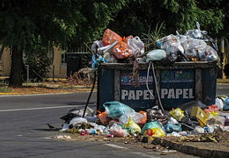
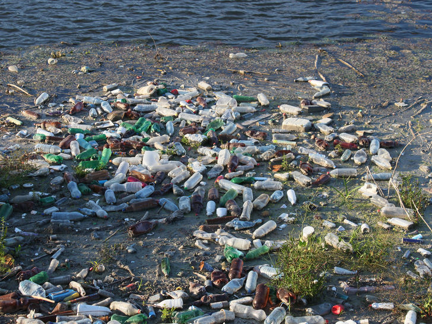
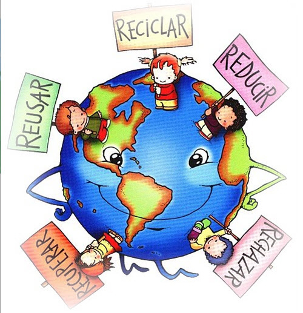

La contaminación del agua se refiere al agua que está siendo contaminada. Esto significa que el agua está contaminada con sustancias nocivas. Es el resultado de los productos químicos, basura y otras partículas extrañas que entran en el agua y contaminan el sistema. La contaminación afecta los cuerpos de agua, como estanques, lagos, ríos, mar y océanos y, en consecuencia, afecta a la vida de las plantas y los organismos que viven en estos cuerpos de agua. El agua contaminada no es adecuada y segura para beber y para otros procesos de consumo también. No es adecuado también para fines agrícolas e industriales. La contaminación del agua es el segundo problema ambiental más importante: el primero es la contaminación del aire.

El monóxido de carbono y óxido de azufre se consideran contaminantes primarios. Estos contaminantes sufren cambios químicos y causan efectos secundarios tales como smog. La contaminación del aire se define por la existencia y la integración de los compuestos tóxicos en el ambiente en concentraciones lo suficientemente altas como para causar daño a los seres humanos, los animales y el medio ambiente de la Tierra.

La contaminación del suelo se refiere a la contaminación del suelo por medio de exceso de fertilizantes, productos químicos, insecticidas, herbicidas, pesticidas, etc provocan contaminación del suelo en la disminución de la calidad del suelo y es causada por la erosión del suelo, el exceso o déficit de humedad, disminución de la nutrientes para las plantas o microorganismos del suelo, y la fluctuación de la temperatura alta. La contaminación del suelo, en cierto modo, también conduce a la contaminación del aire y la contaminación del agua. La contaminación del suelo conduce naturalmente a la contaminación del aire por la liberación de estos compuestos en la atmósfera y que puedan explotar. La contaminación del suelo también contribuye a la contaminación del agua si las sustancias venenosas filtran a las aguas subterráneas, o si llega a desbordarse contaminado ríos, lagos u océanos.
Los desechos radiactivos son residuos que contienen material radiactivo. Los desechos radiactivos son generalmente subproductos de la generación de energía nuclear y otras aplicaciones de la fisión nuclear o tecnología nuclear, como la investigación y la medicina. Los residuos radiactivos son peligrosos para la salud humana y el medio ambiente, y está regulado por las agencias gubernamentales con el fin de proteger la salud humana y el medio ambiente. La contaminación radioactiva disminuye con el tiempo, por lo que los residuos se aísla típicamente y se almacenan durante un período de tiempo hasta que ya no representa un peligro. El período de tiempo de residuos se deben almacenar depende del tipo de residuos. Bajo nivel de residuos con bajos niveles de radiactividad por masa o volumen (por ejemplo, algunos residuos comunes radiactivas médicas o industriales) puede ser necesario almacenar durante sólo unas horas, días o meses, mientras que residuos de alto nivel (como el combustible nuclear gastado o subproductos de reprocesamiento nuclear) deben ser almacenados durante miles de años. Actuales enfoques principales para la gestión de residuos radiactivos han habido separación y almacenamiento de residuos de vida corta, cerca de la superficie de eliminación de baja y algunos residuos de media, y el entierro profundo o transmutación de los de vida larga y de alto nivel residuos.

Los residuos industriales se vierten en estos cuerpos de agua. Esto provoca un desequilibrio químico en el agua que conduce a la muerte de los seres acuáticos. Insecticidas, pesticidas y productos químicos de maduración que se utilizan en las plantas que se usan en el sistema de aguas subterráneas o arroyos cercanos. Lavar la ropa cerca de lagos y ríos detergentes causa una enfermedad llamada “eutrofización”, que bloquea la luz del sol entre en el interior y reduce los valores de oxígeno en el agua, causando un ambiente inhabitable. Derrames de petróleo’ son causados cuando los buques petroleros gigantes y plataformas petrolíferas que están presentes en los océanos están dañadas por cualquiera tipo de error humano o natural causando un daño a largo tiempo para el océano. Para la reparación de los daños que ya se ha hecho, las plantas de tratamiento de agua se construyen con técnicas innovadoras para limpiar el agua contaminada. Pero como siempre una cierta parte de los daños no se pueden resolver, por lo tanto, es mejor prevenir la contaminación del agua ya que esta es una necesidad básica para la supervivencia del hombre. ¿Cuáles son las causas de la contaminación del agua Residuos Domesticos: Los residuos domésticos se genera a través de diversas actividades del hogar. Esta residuos domésticos contiene materiales orgánicos e inorgánicos tales como fosfatos y nitratos. La gente suele tirar la basura en la fuente de agua cercana, lo que conduce a las enfermedades, como la diarrea. Residuos Agricolas – Los fertilizantes químicos y los pesticidas se utilizan en las granjas agrícolas en grandes cantidades. En el caso de las precipitaciones, los escurrimientos de los campos agrícolas obtienen la mezcla haciendo que el agua contamine, que a su vez contamina las fuentes de agua como ríos, arroyos y lagos. Residuos Industriales – El material de desecho que procede de las industrias contiene muchas sustancias nocivas y tóxicas.

Hay varias causas que conducen a la contaminación del suelo. Las principales fuentes de contaminación del suelo incluyen – la deforestación, los incendios forestales, la erosión del suelo, la erupción volcánica, el uso excesivo de fertilizantes químicos, pesticidas, herbicidas, etc, y el vertido de residuos industriales y urbanos. Efectos de la Contaminación del Suelo La contaminación del suelo afecta negativamente a los seres humanos como a los animales, ya que da lugar a disminución de la producción agrícola y la consecuente escasez de alimentos. Los fertilizantes químicos y pesticidas que se utilizan para aumentar la producción agrícola no sólo degradan el suelo debido a su uso excesivo, sino que también entran en la cadena alimentaria y afectan la salud de las personas que consumen el alimento.

La producción de combustible nuclear Reactores nucleares de potencia El uso de radionucleidos en las industrias para diversas aplicaciones Los ensayos nucleares llevados a cabo por personal de la defensa La eliminación de los residuos nucleares MINERÍA DEL URANIO Efectos de la Contaminación Radiactiva Los efectos de la contaminación radiactiva o la exposición a las radiaciones nucleares se registró por primera vez en el siglo 20 cuando las personas que trabajan en las minas de uranio sufrieron quemaduras en la piel y cáncer. Los efectos varían de organismo a organismo y desde el nivel de radiactividad de isótopos nucleares. Las radiaciones de destruir las células en el cuerpo humano y causa cáncer. Las partículas radioactivas forma iones cuando reacciona con las moléculas biológicas. Estos iones forman radicales libres que comienzan lenta y constantemente destruyendo proteínas, membranas, y ácidos nucleicos. Una exposición más prolongada a las radiaciones radioactivas pueden dañar las células de ADN que producen cáncer, defectos genéticos para las generaciones futuras e incluso la muerte. La contaminación atmosférica no es un fenómeno constante o regular y por lo tanto la frecuencia y la duración de la contaminación pueden variar con el tiempo y las condiciones. Los tres principales tipos de condiciones son: La contaminación continua: Este tipo de condición existe en las minas de uranio, reactores nucleares, laboratorios de ensayo, etc, donde los seres humanos están bajo continua exposición a los contaminantes radiactivos y ropa de protección necesarias para evitar la exposición a la radiación. Contaminación Accidental: Este tipo de condición existe durante la exposición accidental a radiaciones en virtud del fallo del equipo, fuga de radiación, equipos de protección defectuoso, etc Contaminación ocasional: Esta condición se produce durante el experimento aislado o prueba de sustancia nuclear.
El control de la contaminación del suelo es muy esencial para evitar la vida humana. Para evitar la contaminación del suelo, las siguientes medidas son muy eficaces: Manejo integrado de plagas debe ser adoptada. Los residuos industriales y urbanos deben desecharse correctamente. El uso de DDT (dicloro-difenil-tricloroetano) debe ser restringido. Los agricultores deben ser educados acerca de los efectos nocivos del uso excesivo de fertilizantes químicos y otras prácticas agrícolas que son perjudiciales para el suelo. Prácticas de agricultura orgánica debe ser alentada. El estrés es conveniente establecer en el manejo del cultivo y uso de la tierra.
La contaminación del aire puede prevenirse sólo si los individuos y las empresas dejar de usar sustancias tóxicas que causan la contaminación del aire en el primer lugar. Para ello sería necesario el cese de todos los fósiles que queman combustible en procesos de fabricación industrial y para uso en el hogar de los acondicionadores de aire. Este es un escenario poco probable en este momento. Sin embargo, a partir de junio de 2010, la Agencia de Protección Ambiental (EPA) presentó una propuesta para una regla de transporte federal, que establece normas estrictas en la fabricación de ferretería industrial y el poder y la manipulación. Las regulaciones están diseñadas para reducir aún más las emisiones nocivas a la atmósfera de la Tierra.
El contacto con el área polucionada no siempre es directo. Es lo que ocurre cuando se entierran sustancias tóxicas bajo el suelo y éstas acaba contaminando aguas subterráneas que luego se utilizan para regar, para beber o acaban intoxicándonos a través de la cadena alimentaria o trófica, al comer pescado, aves o cualquier otro animal contaminado.El almacenamiento incorrecto de residuos, su vertido intencionado o accidental, la acumulación de basuras en su superficie o el enterramiento de los mismos, así como fugas en tanques superficiales o subterráneos por averías o infraestructuras deficientes son algunas de sus principales causas. Sin embargo, la lista es mucho más larga. Podemos citar otras causas no menos importantes, como las fugas radiactivas, el uso intensivo de pesticidas o abonos químicos, la minería, las actividades de la industria química, los metales pesados que vomita el tubo de escape del tráfico rodado y las chimeneas de la industria, los materiales de construcción , – sobre todo por la escorrentía del agua que disemina los productos nocivos-, el alcantarillado antiguo en mal estado o, sin ir más lejos, la misma lluvia ácida.
La contaminación nuclear puede estar presente en materiales, en elementos de uso diario, en personas y en el medioambiente. La exposición a estos contaminantes trae graves consecuencias: • Altas dosis de radiactividad puede provocar la muerte • Pequeñas dosis pero de forma reiterada puede acarrear caída del pelo, leucemia, cánceres y defectos degenerativos Frente a la contaminación radioactiva existen muchos protocolos a seguir para que en las poblaciones donde ha ocurrido algún escape se vea lo menos afectada posible. Los responsables de estas acciones sugieren: *Refugiarse en sótanos de casa para no entrar en contacto con los contaminantes. *Si se ha mantenido contacto con la piel, se debe duchar y cepillar muy bien el pelo y el cuerpo con detergente, y arrojar a la basura la ropa. *Si se ha inhalado algún infectante es aconsejable tomar pastillas de yodo. Los desastres naturales, las sequías y el calentamiento global son males que afectan sobre manera a las comunidades más vulnerables que viven en la pobreza. Por ello desde Inspiraction intentamos aliviar con nuestro trabajo directo, los efectos de estos fenómenos en esas sociedades.
la tierra está disponible para el consumo humano. Y debido a que las empresas de productos químicos vertidos en nuestras fuentes de agua, las personas que lanzan basura en cuerpos de agua cerca de las zonas urbanas, y la escorrentía química hacen contaminar las aguas subterráneas, la cantidad de agua potable disponible para el ser humano es rápidamente decreciente.No sólo hay menos agua potable para nosotros, la vida silvestre se están extinguiendo y los ecosistemas están siendo destruidos. Si eres tan apasionado como yo estoy a punto de hacer una diferencia, aquí están 5 medidas de prevenir la contaminación del agua en el hogar: 1. Use menos agua 2. El uso de productos ecológicos del hogar 3. Aplique los pesticidas y fertilizantes naturales 4. No tire basura 5. Deseche los productos tóxicos con cuidado

Hay muchas formas de ayudar a reducir la contaminación del aire. Se puede hacer un aporte significativo a la purificación del aire simplemente siguiendo (o no, según sea el caso) ciertas prácticas sencillas Seguir la senda o caminos marcados. No fumar ni encender fuego. No arrojar basura, y levantarla si la encontramos. No alterar las señales o marcas de senderos. No pintar las piedras, arboles o rocas. No molestar a vegetales ni animales. No gritar ni usar luz innecesariamente. Dejar las puertas y tranqueras igual que como las encontramos- Respetar a la gente de campo sus cultivos y la propiedad privada. Recomendaciones específicas para salidas en bicicleta.
La contaminación del suelo es la acumulación de fibras artificiales y sustancias tóxicas en el suelo que le confiere un efecto negativo a la vida vegetal y animal. A menudo no nos damos cuenta, pero estamos contribuyendo a la contaminación del suelo. Por lo tanto, es importante saber cómo evitar su contaminación, de modo que pequeñas medidas adoptadas por cada persona ayuden a su protección. Opta por productos orgánicos. No hay duda de que los productos orgánicos son caros en comparación con los productos químicos. Pero la elección de los productos ecológicos fomentarán una producción más orgánica. Esto te ayudará en la prevención de la contaminación del suelo. Reutiliza. El plástico es una de las principales causas de la contaminación del suelo, ya que toma un tiempo muy largo para desintegrarse. · Por lo tanto, debes considerar el cambio a los envases reutilizables, como bolsas de algodón, vidrio, etc.
la contaminación radiactiva, siendo ésta una contaminación muy grave. Las Centrales Nucleares alejadas de cualquier centro urbano y con un radio de 300 Kilómetros. Los empleados en las plantas nucleares debería recibir una capacitación mucho más avanzada, debido a que pueden ocacionar accidentes radiactivos por errores humanos. Educar a la población que vive o trabaja cerca de zonas de alto peligro radiactivo. Tener cuidado en la tranformación de Energía Nuclear a Energía Eléctrica. Estas soluciones a Corto Plazo ayudarían a: Evitar accidentes de éste tipo en un futuro lejano. Darle la oportunidad a cientos de jóvenes para realizar su primera experiencia laboral, ya que estarían en las calles enseñando a las personas que viven cerca de zonas radiactivas A Mediano Plazo: Crearía más puestos de empleo, desde obreros hasta empresarios ya que se necesitaría personal capacitado para evitar accidentes en la Tranformación de Energía nuclear a eólica A Largo Plazo: Se Evitarán en promedio 1 Accidente Radiactivo. Habrá menos desempleo. Se logrará tranformar de forma eficiente la energía nuclear a eólica. "Abandonar la energía nuclear es exclusivamente una cuestión de voluntad política, ya que no hay ningún problema técnico, energético o económico que lo impida y, además, es lo más deseable desde el punto de vista de la seguridad y de la protección del medio ambiente y la salud." Greenpeace España
En mi comunidad existen dos tipos de contaminacion ; La primera es la contaminacion del suelo y la del aire. La contaminacion del aire, es cuando queman la basura en la calle y hacen que el humo de la basura contamine el aire. La contaminacion del suelo es cuando tambien queman la basura y tiran en el suelo. Layoria de las veces la basura que tiran son contamiantes que tardan añOS en poder degradarse asi como las bolsas o plasticos. Esta degradación del medio ambiente por un contaminante externo puede provocar daños en la vida cotidiana del ser humano y alterar Las condiciones de supervivencia asi como la de los animales y de las plantas
Algunas de las medidas que pueden hacer al respecto para cambiar esto. es ayudadando a reducir la contaminación del aire. algunos d elos pasos que podemos seguir: No fumar ni encender fuego. No arrojar basura, y levantarla si la encontramos. No alterar las señales o marcas de senderos. tambien lo que podria hacer es que las personas esten conscientes del problema, que hay y que esten consientes de los daños que esto puede provocar y ver la mejor manera de resolverlo. Esto se puede hacer mediante la educación adecuada hablando con ellos.